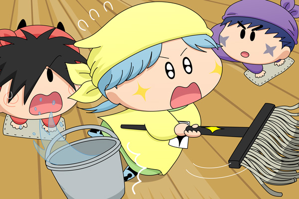

ヤシチ「ピカリはお前たちと違って掃除のプロだからな。
今日は安心して掃除を任せられるのだ」
サスケ「オイラたちもいつもがんばってるだぜ！」
ピカリ「お～りゃおりゃおりゃおりゃ・・・」
サスケ「おぉ、これは確かにすごいぜ！」
ピカリ「おりゃおりゃおりゃおりゃおりゃ・・・きゃっ」
ピカリは床で滑ってよろけてしまい、そのはずみでバケツを倒してしまいました。
倒れたバケツから水が広がっていきます。
ヤシチ「どうしたのだ？ピカリ？」
ピカリ「ドンマイピカよ！」
サスケ「本当に大丈夫なのかだぜ？」
ヤシチとピカリを共演させてみました。二人ともお掃除のプロだけど、一緒に掃除をさせたら逆に効率が落ちる…という、よく分からない設定のおまけ付きで(^^;。この後もトラブルの連続続きで、さすがのピカリも少しは落ち込んでしまったりして。
アニメミルモに登場するゲスト妖精は、男の子よりも女の子の方が変わったタイプが多いような気がします。別の機会にまたいろいろな妖精を組み合わせてみようかな・・・。
(2011/10/26)